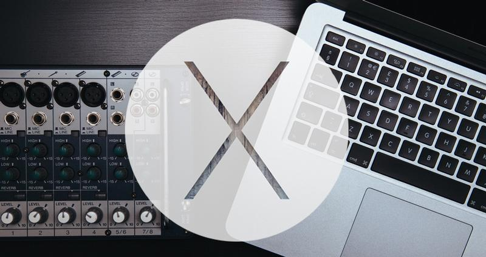

| Minimum rendszer követelmény: iMac (Mid-2007 vagy újabb) MacBook (13-inch Aluminum, Late 2008), (13-inch, Early 2009 vagy újabb) MacBook Pro (13-inch, Mid-2009 vagy újabb), (15-inch, Mid/Late 2007 vagy újabb), (17-inch, Late 2007 vagy újabb) MacBook Air (Late 2008 vagy újabb) Mac Mini (Early 2009 vagy újabb) Mac Pro (Early 2008 vagy újabb) Xserve (Early 2009) Az összes Mac ami 64-bites CPU-val van szerelve. |
|  |